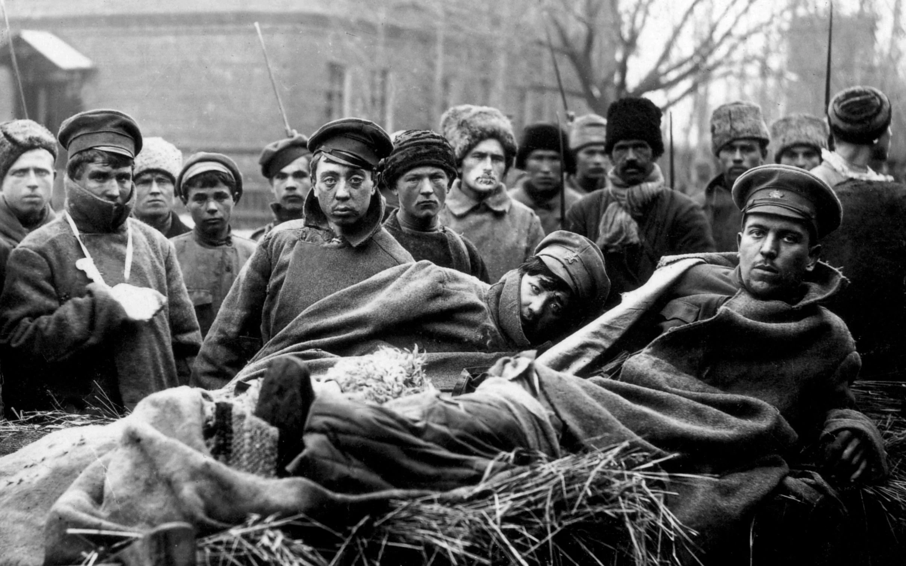
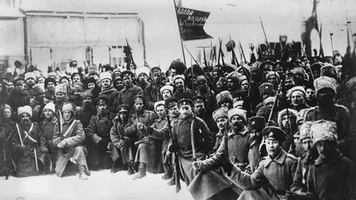

During the War
The war started with Russia accepting giving territory to Bolshevik, in the beginning, but then that formed a problem and war started, creating massive turmoil across Russia. In February 1917 riots over food scarcity broke out in Petrograd. The White Army represented a big group of allies including monarchists, capitalists and supporters of democratic socialism.
Desperately pressed by a new German offensive in Northern France in the spring of 1918. In March 1918 the Bolshevik government agreed to let these units leave Russia by the Far East, but in May violent incidents took place during the evacuation. The soviet movement was dominated by the Socialist Revolutionary Party, they give the distribution of land.
The Russian empire extended from the Arctic ocean to the Black sea (North to South) and from the Baltic sea to Alaska and Hawaii (West to East). After that the formation of the Russian Socialist Federative Soviet Republic and later the Union of Soviet Socialist Republics in most of its territory. The power of the Bolsheviks was not accepted in the world and the country fell into a civil war. The two most important groups were the Red Army, which fought for the justice of a socialist state led by the Bolsheviks and headed by Vladimir Lenin.

